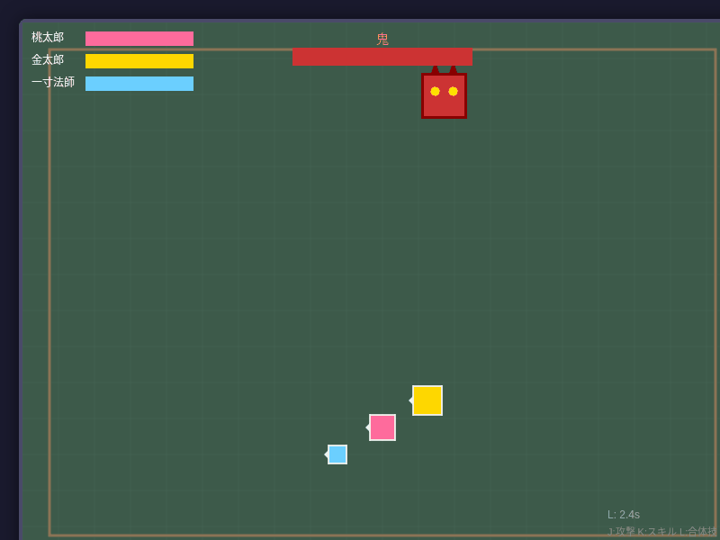

アクション昔話パーティーバトル
桃太郎、金太郎、一寸法師。物語をこえた3人で、鬼退治へ出かけよう。力を合わせた合体技が勝利のカギ。
遊び方を見る
WASD / ↑↓←→ 移動
J 通常攻撃 K 固有スキル
L 合体技 R 勝利・ゲームオーバー後に再挑戦
JAPANESE FOLKTALE GAMES
ページをめくるかわりに、物語のなかへ。
鬼に立ち向かったり、枯れ木に花を咲かせたり。
おなじみの昔話が、小さなゲームになりました。
インストール不要・ブラウザですぐに
ブラウザで遊べるようになるまで、もう少し。